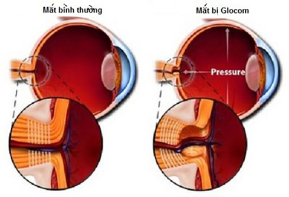

Glocom nhãn áp không cao: Căn bệnh dễ gây mù lòa

Glocom nhãn áp không cao là căn bệnh về mắt nguy hiểm vì nó làm giảm và mất thị lực của
người bệnh mà không có khả năng hồi phục.
Glocom nhãn áp không cao là gì?
Glocom nhãn áp không cao là một hình thái đặc biệt của glocom góc mở, triệu chứng rất ít,
không có đau nhức mắt, đau nhức đầu, nhãn áp không cao, triệu chứng cơ năng duy nhất là
nhìn mờ, do vậy, chúng ta thường ít nghĩ đến bệnh glocom. Do vậy việc chẩn đoán bệnh
glocom nhãn áp không cao thường rất khó khăn và được chẩn đoán muộn
Glocom nhãn áp không cao được mô tả lần đầu tiên bởi Albrecht Von Graefe vào năm 1857,
là một hình thái glocom góc mở nguyên phát trong đó không có nhãn áp cao.
Theo quan điểm hiện nay thì glocom nhãn áp không cao không chỉ đơn thuần là bệnh lý của
thị thần kinh mãn tính mà nó còn kết hợp sự bất thường của đĩa thị, dẫn đến thay đổi thị
trường mà nhãn áp vẫn trong giới hạn bình thường. Như vậy sự khác nhau giữa glocom góc
mở nguyên phát và glocom nhãn áp không cao là nhãn áp cao mà thôi.
Nguy cơ mắc bệnh Glocom nhãn áp không cao
Bệnh Glocom nhãn áp không cao là bệnh của người già, đa số các bệnh nhân trên 50 tuổi,
thường gặp ở nữ nhiều hơn nam, đặc biệt là những người có bệnh xơ hóa tuổi già.
Bệnh Glocom nhãn áp không cao có yếu tố nguy cơ chính là mạch máu như cao huyết áp, bệnh
đái tháo đường, huyết áp thấp vào ban đêm, những hội chứng gây co thắt mạch hội chứng
migraine, hội chứng Raynaud…, gần đây có hội chứng hạ huyết áp khi ngủ.
Yếu tố gia đình: Cũng như bệnh Glocom nói chung, bệnh Glocom nhãn áp không cao có tính
chất gia đình, người ta tìm thấy một số gen có liên quan đến bệnh.
Chủng tộc: Glocom nhãn áp không cao gặp nhiều ở các nước châu Á, trong khi đó thì người
da đen gặp glocom nhãn áp cao nhiều hơn, và Nhật Bản tỉ lệ bệnh gloocom nhãn áp không
cao nhiều hơn các nước khác.
Triệu chứng của bệnh Glocom nhãn áp không cao
Glocom nhãn áp không cao thường có diễn biến không triệu chứng, trừ những trường hợp tổn
hại thị trường muộn, tổn hại thị trường nhiều.
Theo dõi bệnh nhân glocom nhãn áp không cao, thấy sự dao động nhãn áp mà đỉnh dưới
21mmHg. Cần lưu ý đến nhãn áp đích, là ngưỡng mà khi vượt quá ngưỡng này sẽ gây ra tổn
hại thị thần kinh và tổn hại chức năng thị giác như thị lực và thị trường. Cần lập biểu
đồ theo dõi sự thay đổi nhãn áp trong ngày để giúp chẩn đoán xác định glocom nhãn áp
không cao. Hiện nay, có thể theo dõi nhãn áp theo những giờ nhất định bằng cách sử dụng
nhãn áp kế bút điện tử để theo dõi nhãn áp.
Bệnh biểu hiện rõ nhất ở gai thị với các triệu chứng cụ thể như:
– Tổn hại gai thị không có sự khác biệt với các loại glocom khác như tỉ lệ C/D lớn, tổn
hại lớp viền thần kinh đĩa thị giác, thay đổi mạch máu của đĩa thị giác …
– Tuy nhiên, trong glocom nhãn áp không cao tổn hại gai thị cũng có 1 số đặc điểm riêng:
– Lớp viền thần kinh quanh gai thị mỏng hơn so với glocom nhãn áp cao.
– Lõm gai không quá sâu và lớp lá sàng ít bị đấy ra phía sau hơn.
– Hay gặp tổn hại viền thần kinh gai thị khu trú ở 1 vị trí kèm theo lõm gai thị sâu và
thay đổi lớp lá sàng tạo thành hố gai thị mắc phải, 75% gặp ở glocom nhãn áp không cao
so với 15% ở glocom nhãn áp cao.
Các triệu chứng khác đi kèm như:
– Một trong những dấu hiệu thường gặp nhất của bệnh là teo võng mạc cạnh gai thị (vùng α
và vùng β).
– Thường xuất huyết gai thị
– Tổn hại lớp sợi thần kinh quanh gai thị: hay gặp tổn hại lớp sợi thần kinh khu trú ở 1
vị trí nào đó hơn là tổn hại toàn bộ chu vi gai thị.
– Tuy nhiên, những dấu hiệu trên không đặc hiệu cho glocom nhãn áp không cao.
– Bệnh Glocom nhãn áp không cao nếu không được điều trị sẽ ngày càng tiến triển nặng,
biểu hiện thị lực ngày càng giảm, thị trường ngày càng thu hẹp, cuối cùng có thể dẫn đến
mù lòa không thể hồi phục được.
Cần phân biệt với những loại glocom khác
Phân biệt với glocom nhãn áp cao đã được điều trị: đã sử dụng các thuốc hạ nhãn áp như
thuốc ức chế β, ức chế men chuyển…Với glocom nhãn áp thay đổi: là glocom góc mở do sự
dao động lớn của nhãn áp. Khi đo vào lúc nhãn áp thấp dễ lầm tưởng với glocom nhãn áp
không cao. Cần phải theo dõi chặt chẽ nhãn áp và lập đồ thị theo dõi nhãn áp trong ngày.
Glocom nhãn áp cao đã được điều trị ổn định: trước đó đã từng có nhãn áp cao như glocom
do cortison. Đặc điểm là thị trường ổn định.
Phân biệt với bệnh lý thị thần kinh không phải do glocom. Tổn hại do chèn ép đường thị
giác: Một số teo thị thần kinh do thoái hóa sợi trục thần kinh cũng gây ra lõm gai như
trong bệnh glocom, nhưng trong trường hợp này gai thị bạc màu (teo gai thị). Bệnh thị
thần kinh thiếu máu: lõm teo gai thị giống như trong bệnh glocom nhưng thị trường ổn
định, không tiến triển.
Điều trị bệnh Glocom nhãn áp không cao
Đạt được nhãn áp đích: điều trị hạ nhãn áp đến khi bệnh không tiến triển nặng hơn, mức
độ hạ nhãn áp khác nhau tùy thừng bệnh nhân. Tuy nhiên, mức độ hạ nhãn áo tối thiểu là
30% áp nhãn áp của bệnh nhân.
Xác định những yếu tố nguy cơ mắc phải và kiểm soát chúng:
Phát hiện cao huyết áp và điều trị cao huyết áp, không dùng thuốc co mạch.
Phát hiện huyết áp thấp.
Thường xuyên theo dõi tiến triển của bệnh.
Có thể dùng được tất cả các loại thuốc hạ nhãn áp trừ thuốc ức chế beta không chon lọc
do có tác dung gây co mạch. Prostagladine, laser vùng bè, phẫu thuật lỗ dò…
Chỉ định: không có chỉ định cụ thể, ưu tiên dùng thuốc trước, chỉ phẫu thuật khi dùng
thuốc thất bại.
Bệnh viện mắt Sài Gòn
Ths.Bs.Nguyễn Phú Tùng